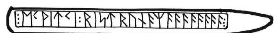

Material Grimoire
Wand

The Tool of Enhancement
A magick wand is a tool that enhances and directs power, it never substitutes for it. Magick power ultimately derives from the person who wields that tool. The wand serves to enhance and direct that power, acting as an extension and amplification of the practitioner's will.
Wands rival Broom for the title of tool most associated with magick and witchcraft. However, it is important to note that, as with brooms, not every practitioner uses a wand. They are not a requirement of magickal practice, merely among one of its most popular tools.
The Stang
The extension of the wand is the stang, a staff with a forked end. The stang can be used to cast or mark a circle as well as to direct energy. It bridges the wand and staff traditions, offering greater reach and the symbolic power of the fork.
Traditional Sizing
Traditionally, wands are made of wood and run the length of the practitioner's inner elbow to the tip of the middle finger. As each witch is a different height, this leads to considerable variation in wand length. This personalized sizing creates an intimate connection between tool and practitioner.
Finding and Acquiring Your Wand
Wands can be obtained in several ways:
- Inherited from another practitioner, mentor, or coven member
- Received as a gift
- Purchased from a skilled artisan or professional wand-crafter
- Self-crafted
A pre-owned or purchased wand must be cleansed of previous influences and charged with the new owner's personal energy. The exception is a wand inherited from a particularly powerful or revered practitioner, in which case one may wish to preserve and build upon those existing vibrations rather than erase them.
Charging a New Wand:
- Hold a quartz crystal between the hands and charge it with personal energy and intent
- When the wand is not in use, wrap the crystal around it with a piece of red silk
- Roll the wand and attached crystal together into black velvet and leave them together
- Periodically cleanse and recharge the crystal
Invoking Elementals
Wands are particularly suited to invoking elementals and spirits who are allergic to or offended by iron. Where an athame's steel blade would repel such entities, a wooden wand allows communion. This makes wands the preferred tool for working with fae, nature spirits, and elemental beings.
Crafting Your Own Wand
The traditional wand length is eighteen inches, or from the elbow to the tip of the forefinger.
To Cut or Not to Cut
In the Romany tradition, branches are not cut; one waits for the right branch to appear of its own accord. Wands are regarded as gifts of the trees. If a particular type of wood or a specific tree is desired, the tree may be asked to drop a branch, with the requester returning periodically to see if the wish has been granted. Even when no cutting is done, a libation is offered at the spot where the branch is collected.
If cutting is necessary, permission must always be requested first. The branch retains the tree's essence and will work more cooperatively when received in a spirit of mutual respect.
Steps for Cutting a Branch:
- Choose a healthy tree that can spare a branch. A branch already fallen or naturally hanging is an especially auspicious sign; a wand from such a branch carries great power
- Speak to the tree aloud; explain the purpose and ask permission; leave silence for a response
- Await an answer through one of these methods: use divination (wooden runes are ideal), sit quietly until clarity comes, request an external sign, or ask the tree's spirit to respond through dreams
- Cut swiftly and cleanly
- Offer a libation: water is required; honey, tobacco, wine, crystals, or gemstones may also be given as an exchange
- Carve the wand from the wood
- Embellish as desired: runes or magickal symbols can be carved in; crystals, feathers, stones, or fabric may be added
Building a Relationship With Your Tree
No wood will serve as well as wood from a tree with which a genuine relationship has been forged:
- Visit the tree regularly; bring it gifts; speak to it and listen
- When ready, request a branch or wait until one is offered
- Continue the relationship after obtaining the wand; periodically rest the wand against the roots of its source tree to re-energize it
A Note on Tool Ownership
Some traditions restrict owning tools until one has been initiated. While this may sound severe, it helps witches develop a natural appreciation for their tools without relying on them for work. Remember: you are the magick.
Masculine and Feminine Power
Wands represent male phallic power but are used by both male and female practitioners. Wizards use wands but so does the sorceress-goddess Circe. Female fairies are commonly depicted employing wands. The Maenads brandished Dionysus' sacred wand, the thyrsus, a pine cone-tipped staff wound with ivy.
The wand may put masculine power in the hands of a woman in the same manner that a broom or birch switch places feminine power in the hands of a man.
Origins and Symbolism
The wand may be understood as deriving from ancient sacred phallic images and is closely related to the Staff. It may also be understood as deriving from the ancient feminine mysteries of the Labrys-some believe the labrys is the ancestor of the magick wand and that when deities like Circe are described as holding a "wand" what is really meant is a labrys.
The Goetic Rod of Divination
Beyond its general symbolism, the wand carries a special charge as the tool of divination and prophecy. The prophet's staff, the dowser's rod, and the necromancer's wand are all expressions of the same underlying idea: a rod through which hidden knowledge flows. This lineage stretches from the Tibetan Dorji, or thunderbolt scepter, to Mercury's own winged staff, the Caduceus, and threads through nearly every legendary wielder of hidden wisdom, including the Egyptian magicians Jannes and Jambres, Moses, Aaron, Elijah, Merlin, Virgilius, and Roger Bacon. Beyond its phallic nature, the rod also acts as a pointer or indicator, recalling the flying arrow said to carry the Greek seer Abaris across the sky.
Witches traditionally distinguish between two forms of this tool. The riding staff, once disguised as the broomstick and used in fertility work, differs from the smaller Goetic rod (sometimes called the verendum or baculum) used to question intelligences during divination. The Goetic rod tends toward Cabalistic ornamentation, often carved with Hebraic divine names, while many modern witches simply combine both forms into a single wand.
The Power of Trees
The wand may be understood as tapping into the power of trees. Different types of wood radiate different energies and suit different magickal purposes. Good all-purpose wands come from ash, hawthorn, hazel, and rowan. Lightning-struck wood carries exceptional power. Driftwood is also excellent as it requires no cutting and combines the energies of Earth and sea.
Woods by Purpose:
- Divination: ash, rowan, willow
- Exorcism: date palm, tamarisk
- Healing: hazel
- Love: apple, ash (also called Venus of the Woods)
- Necromancy: cypress, yew, oleander, hemlock
- Prosperity: ash
- Protection (against malicious spirits and malevolent magick): blackthorn, olive, rowan
- Spirit work: elder
Some practitioners own only one wand; others prefer a collection, using different woods for different workings.
Tradition-Specific Woods
| Tradition | Favored Wood |
|---|---|
| Ainu | Bamboo, leaves left on; top carved into spiral designs |
| Berber | Oleander |
| Celtic | Hawthorn, hazel |
| Chinese | Peach, willow |
| Druid (British) | Hawthorn, rowan, yew |
| Druid (Gaul) | Oak |
| Romany | Elm |
| Russian / Slavic | Birch |
| Scythian | Willow |
The Runic Wand (Gandr)
In the Nordic runic tradition, the magick wand is known as the gandr, the most generic term, which expresses the powerful nature of this talismanic object.
Runic Construction
- Diameter: No smaller than the index finger, no larger than the ring made by closing the tips of index finger and thumb
- Length: As short as the length of the hand, or as long as the distance from fingertips to elbow
- Shape: Blunt or rounded on the hinder end; the forward end may be fairly pointed or moderately rounded
The vitki may carve all twenty-four runes of the Elder Futhark on the gandr, arranged in three rows of ættir, or devise a more unique and magickally potent formula. The total number of runes should be twenty-four, thus magickally representing the entire Futhark.
Traditional Inscription
The formula ek vitki is a potent magickal statement that declares the power of the vitki and loads the object with their force. The numerical value of this part of the formula is 78, or 6 × 13. The eight A-runes invoke the power of Ódhinn out of all eight corners of heaven.
ek vitki rist rúnar aaaaaaaa
("I the Magician carved the runes aaaaaaaa")
Materials and Construction
Although less common than wooden wands, wands are also crafted from metal. Crystal wands are another popular form.
Aleister Crowley, Master Magus, typically alternated between two wands: a heavy cast-iron wand and a lighter wooden wand, usually crafted from almond wood.
Wands may be ornamented with crystals, feathers, and amulets. They may be engraved with sigils, runes, hieroglyphs, Names of Power or magickal inscriptions. Wands may also be wrapped with copper wire or contain a copper rod within to enhance energy conductivity. As described in the Harry Potter novels, wands may be hollowed out and filled with a reed or some other material, however due to limitations of size, obviously less material can be placed within a wand than inside a Staff.
Directing and Attracting Energy
A wand's main purpose is to direct energy. If you want to send energy to a person, place, or thing, aim your wand in that direction. You can also attract energy with a wand-point it at the sky to draw down power from the heavens, or at the ground to draw up the energy of Mother Earth. Magicians often cast protective circles by using a wand to direct energy around a designated space.
Fiery Adornments
The wand corresponds to the element of fire and appears in the tarot as the suit of Wands (sometimes called Rods or Staves). Therefore, you might select adornments that resonate with a fiery nature:
- Carnelians - Fire-aligned stones
- Red ribbons - Color of flame and passion
- Touches of gold - Solar metal
- Iron - Metal of Mars and will
The decorations you choose should be ones that you find meaningful and that help you focus your mind.
The Finger of Power
Wands specifically direct the power of humans: there's a crucial reason why most children are taught early on that it's rude to point. Pointing is a potent magickal gesture, quite often used in spontaneous, hostile magick: the curse that just slips out of someone's mouth is usually accompanied by a pointing finger directing hostile words in their intended direction. The wand may be understood as an extension and enhancement of that finger of power.
Deities and Spirits Who Wield Wands
Circe: The divine sorceress who used her wand in transformation magick
Dionysus: His sacred wand is the thyrsus, carried by his Maenads
Hypnos: Lord of Sleep, who causes sleep by touching someone with his magick wand or fanning them with his wings
Sibillia: Touched bones in rolled-up animal skins with her golden wand and they immediately replenished with new feasts
Mythic Power
In the German mythic epic The Song of the Nibelungs (Die Nibelungenlied), the dragon's treasure hoard includes a tiny gold wand that enables its possessor to rule the world.
Charging Oils
When consecrating your wand with essential oils, the following correspond to Fire element and will power:
- Cinnamon - Ignites passion and amplifies power
- Sandalwood - Spiritual attunement and focus
- Clove - Protection and banishing negativity
- Musk - Personal power and magnetism
- Patchouli - Grounding fiery energy
- Cedar - Strength and purification
Anoint the wand from base to tip while visualizing your intention flowing through it.
Jungian Correspondence: Intuition
In Jungian psychology, the wand corresponds to the Intuition function, the psychic tool that perceives unrealized potential. Unlike sensation (which perceives concrete reality), intuition receives information from the unconscious, spotting possibilities that don't yet exist in tangible form.
This makes the wand essential for manifestation. Without intuition, we'd be limited to recreating what we've already seen. The wand channels divine lightning, inspiration striking from beyond the known, and directs it toward specific aims. Fire's transformative nature mirrors intuition's capacity to ignite new pathways.
In manifestation work, the wand represents creative direction. It establishes parameters: this working will be this particular thing, not everything at once. These constraints provide a conduit for energy to flow from idea to outcome. However, intuitive fire must be properly channeled. Perfectionism burns practitioners out in pursuit of the unattainable.
Opposite function: Sensation (Pentacle)
Substitutions
Don't have a magick wand? Not to worry. Substitutions are easily made:
- An umbrella
- A cane
- A folding fan
- A flute
- When in need, one's finger can substitute
The crucial thing is to recall that once the instrument has been designated as a magick tool it must be treated as such: an umbrella magick wand is potentially no less sacred than a more conventional wand. If one expects it to behave magickally, it must be treated with the respect and care due any magickal tool.
Specialized Wands
Different materials and crystals can be combined to create wands tuned to specific purposes:
- Love and seduction: copper base topped with rose quartz
- Lunar wand: moonstone atop a silver wand, suited to moon, love, and fertility workings
- Mermaid's wand: driftwood topped with coral, pearls, or shells, for lunar, love, fertility, and money magick as well as sea rituals
- Protective wand: copper wire wrapped around an iron wand, embellished with hematite and black tourmaline
- All-purpose: a clear quartz crystal tip empowers any general wand
- Romantic: rose quartz attached to the wand enhances love spells
- Spiritual quests and cleansings: amethyst
- Protection during ritual: black tourmaline, Herkimer diamond, or smoky quartz as embellishments
Care and Storage
Wrap your wand in leather, red silk, or another magickal fabric when not in use. It may be stored in a box, provided it is wrapped in cloth first.
For optimal attunement, keep the wand nearby as much as possible so it can absorb personal energy and harmonize with its owner's vibrations. Many practitioners sleep with their wand beside them or beneath them.
Moon Magick
Some witches opt to use a wand to direct and magnify energy during lunar rituals and moon spells. It serves as a tool for channeling intention outward, whether casting a circle, drawing down lunar energy, or directing a spell toward its target. A natural quartz crystal point works equally well as an energy director for moon workings, given quartz's receptivity to lunar light. In a pinch, your pointer finger serves the same function. A lunar wand made with moonstone atop a silver base is especially suited to moon, love, and fertility workings.